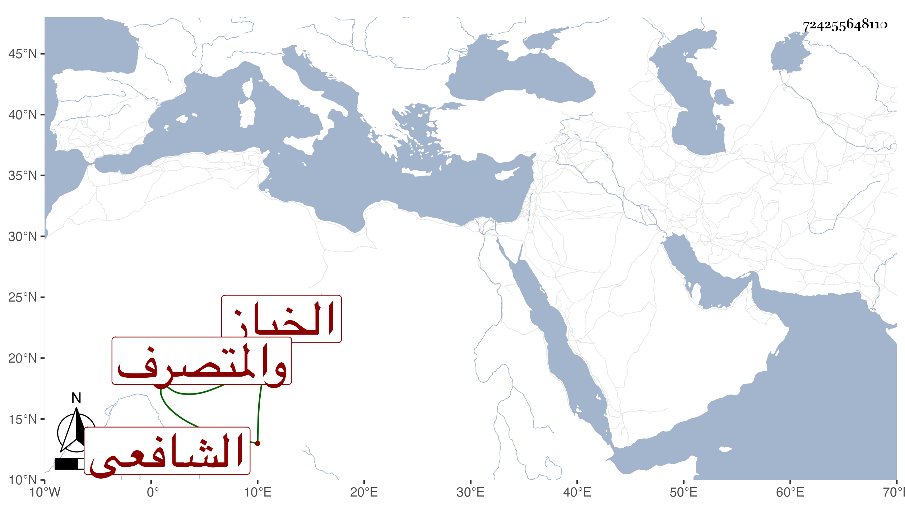

0902Sakhawi.DawLamic.ITO20230111-ara1.EIS1600.724255648110
Biography ID: 724255648110
332
أحمد بن محمد بن خليل بن أحمد بن عبد القادر بن عرفات الشهاب بن خليل الخباز جده والمتصرف أبوه الشافعي نزيل المنكوتمرية وقتا . قرأ القرآن والمنهاج واشتغل في الفقه والعربية والمعاني وغيرها . ومن شيوخه الزين الأبناسي والبدر ابن خطيب الفخرية وابن قاسم وأخي ، ولازمني فقرأ البخاري وغيره وسمع أشياء وتولع بالميقات ففهم شأنه وباشر بالمدرسة الجمالية ناظر الخاص نيابة وكتب بخطه أشياء كشرحي للألفية وجلس شاهدا مع ابن داود .
